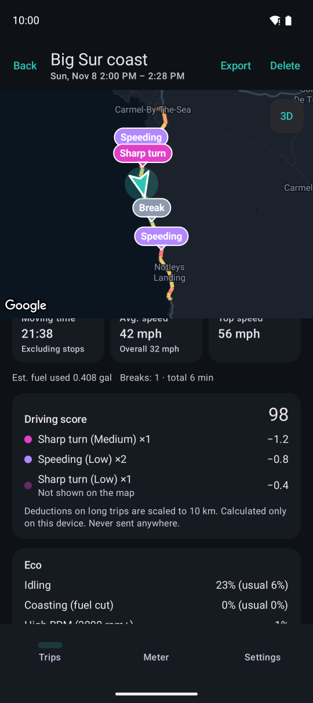
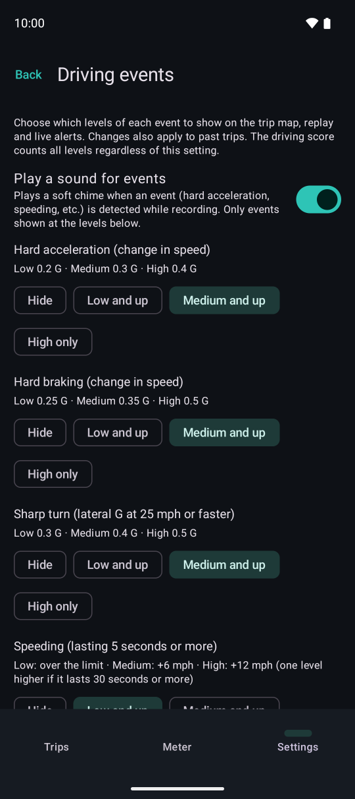

Driving score and events
Each trip gets a score out of 100, and you can see exactly which events cost how many points. It is calculated only on your device; neither the data behind it nor the result is sent anywhere.

123Below the summary in trip details.
- 1Driving score and the count and deduction for each event type and level
- 2Events at levels hidden from the map are still deducted (and labeled so)
- 3Eco review (separate from the score)
How the score works
- Start from 100 and deduct for each event: low −1, medium −3, high −6
- Longer trips have more chances for events, so deductions on trips over 10 km (6.2 mi) are scaled by “10 km ÷ trip distance”
- Impacts (which bumps and rough roads also cause) and breaks are not deducted
- Trips under 1 km (0.6 mi) and trips without speed from the car (GPS only) get no score
- The score does not depend on which levels are shown on the map. It changes only when you change the speeding thresholds
Event levels

123Settings → Driving events.
- 1Event sound on/off
- 2Levels shown on the map, in lists and in live alerts (hide / low and up / medium and up / high only)
- 3Speeding level: from how far over the limit, one level higher if it lasts 30 seconds or more. The speed limits for local roads and expressways are further down
- Hard acceleration: low 0.2 G (about 7 km/h, 4 mph per second), medium 0.3 G, high 0.4 G
- Hard braking: low 0.25 G (about 9 km/h, 5.5 mph per second), medium 0.35 G, high 0.5 G
- Sharp turn: low 0.3 G, medium 0.4 G, high 0.5 G (at 40 km/h, 25 mph or faster, from the change in GPS heading)
- Speeding: over the set speed for 5 seconds or more. Low: over the limit, medium: +10 km/h (6 mph), high: +20 km/h (12 mph)
- Impact: a jolt to the device (to detect it, keep the device in a car mount while driving)
Event sound
When a new event is detected while recording, a soft chime lets you know. Turn it on or off with the switch at the top of Settings → Driving events (on by default; it plays once when you turn it on).
- It plays only for levels shown on the map (not for levels set to “Hide”)
- Even for events that last, such as speeding, it plays only once
- It plays as the same kind of sound as navigation guidance
- Like showing events live while recording, it is a Premium feature
Eco review
Fuel economy is not mixed into the score. It is compared with your other trips in the same vehicle instead.
- Fuel economy: how many percent better or worse than usual (when there are at least 3 other trips and 30 km, 19 mi in total)
- Idling: the share of time stopped with the engine running
- Coasting (fuel cut): the share of moving time with almost no fuel used
- High RPM: the share of time at 3000 rpm or more (2500 rpm for diesel vehicles)